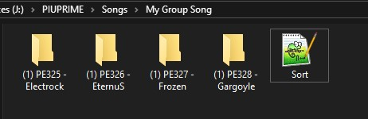
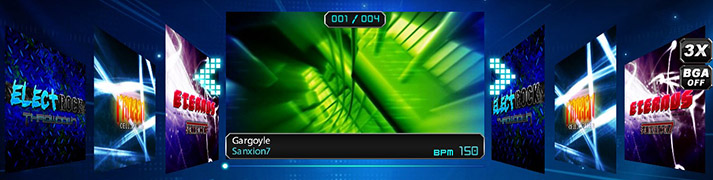
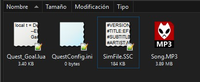
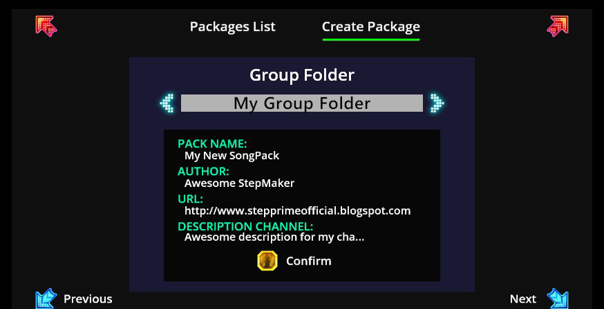

ABOUT DIVISION MODE
Division Mode can be used under Normal or Quest Channels, you can find more information about division mode here.
Before doing stuff over this game, be sure to get the last version of StepPrime.
Download StepPrimeOn Editor you change and add a lot of things, but we included new features on it
There are new values that you can edit/add on your simfile
While using Step Editor, Press Escape > Edit Song Info
While using Step Editor, Press Escape > Edit Step Information. It will only change values under the stepchart.
You can set the AutoVelocity on Editor to View/Edit your Chart under this Scroll Velocity.
Division Mode can be used under Normal or Quest Channels, you can find more information about division mode here.
Division Mode is a great feature that can improve your stepchart, it will switch your stepchart to another chart of the same steptype in realtime gameplay, its conditional so you need to use it carefully, first at all you need to be aware that you can't edit 100% from StepEditor so you need to edit it manually.
Division mode is generally conditional, so before switching to some charts, the game will detect how many W or G were pressed and swicht it depending on amount to another specified chart in the same second on the NoteField. For example, if division is being checked at 19.5 sec, it will switch to another chart in this same second length.
Division check needs to be added manually in stepchart from simfile. Open your simfile and modify values based on this:
[MIN VALUE]=[MAX VALUE]=[CHART NAME]=[SECOND TO CHECK AND CHANGE]=[TAPNOTE]
[MIN VALUE] : Minimal value of specified tapnote pressed before to be checked.
[MAX VALUE] : Maximum value of specified tapnote pressed before to be checked.
[CHART NAME] : Name of chart that will be switched if condition is true, destination #CHARTNAME stepchart should have this value too.
[SECOND TO CHECK AND CHANGE] : Second Length the game will check this condition.
[TAPNOTE] is accumulated in gameplay and will be resetted if condition is true:
#DIVISION:1=1=HARD PATH=36.26100=G
,1=1=MEDIUM PATH=42.82900=W
,2=2=BAD PATH=42.82900=W
; Now explaining the segment above:
On 36.21600 second, the game will detect if you pressed min 1 or max 1 Groovy TapNote before, if its correct, the game will switch to the stepchart with the #CHARTNAME "HARD PATH".
On 42.82900 second, the game will detect if you pressed min 1 or max 1 Wild TapNote before, if its correct, the game will switch to the stepchart with the #CHARTNAME "MEDIUM PATH".
On 42.82900 second, the game will detect if you pressed min 2 or max 2 Wild TapNote before, if its correct, the game will switch to the stepchart with the #CHARTNAME "MEDIUM PATH".
You can set a noteskin/layer to Groove, Wild, Action, Shield, Change. For example, Groove can use a hidden layer, or/and a Basic NoteSkin
Its recommended that every Division Chart destination should be labeled as DIVISION, so they will be hidden and only activated it from these conditions
Wrap and Wrap0 are tapnotes that will automatically be pressed once it reach the receptor and their actions are switch to another stepchart
Wrap will switch to a random stepchart (with the same steptype) or switch to a random stepchart with the labelype 'Division'.
Wrap0 will switch to the stepchart that you select first to play.
Editor is not prepared for Division. So we recommend to insert Wrap0/Wrap/Division Tags once you finished editing your simfile
We are attaching a file where you can see how Division/Division Special and Wrap items are working.
Download the simfile hereCustom Sort will give you a way to customize to sort the songs from your Group Folder. Be aware that once you use custom sort, the game will not play the category sound, and this custom sort will be only available when you enter your channel.
Create a new text file called sort on the Group Folder and open it
Now type the folder names with the order you want using a new line always. Save the file and start the game.
(1) PE328 - Gargoyle
(1) PE325 - Electrock
(1) PE327 - Frozen
(1) PE326 - EternuS Your Group Folder now will looks customized sorted
Quest Channels are Groups where you have songs with stepcharts lockeds, and the only way to unlock them is playing it consecutively from the first one. These steps can have pre-requisite in order to unlock the next stepchart in the row.
| Appear | Vanish | Flash | Nonstep | Boost |
| Brake | Wave | Expand | Boomerang | Drunk |
| Dizzy | Confusion | Mini | Tiny | Flip |
| Invert | Tornado | Tipsy | Bumpy | Beat |
| XMode | Twirl | Roll | Rise | Hidden |
| HiddenOffset | Sudden | SuddenOffset | Stealth | Blink |
| RandomVanish | Reverse | Split | Alternate | Cross |
| Centered | Dark | Blind | Cover | RandomSpeed |
| Mirror | Backwards | SuperShuffle | Wide | Big |
| NXMode | UnderAttack | LeftAttack | RightAttack | Drop |
| Snake | ZigZag | 100% Rise | -100% Rise | HideJudge |
| ExtraJudgement | HardJudgement | VeryHardJudgement | UltraHardJudgement | JudgeReverse |
| BreakOff |
There are two ways to create a quest goal, it can be based on LUA or INI. INI is only for basic requisite, while LUA is more advanced. These files should be attached in the same folder of the Song, and they can't be activated at the same time. So choose wisely.
Song Folder should contain the INI File or the LUA file (Lua file can have any name, and ini file should be called "QuestConfig" )
Quest Goal from INI its a simple way to create a requisite for the stepcharts in the songfolder. Remember, this system is only for basic requisites. Create a file text called QuestConfig but with the INI extension.
INI structure is splitted in S1 S2 S3 S4 and the keys inside are the requisite per step, you can use multiple keys.
[S1]
GRADE=SSS
[S2]
GRADE=SSS,SS,S,A
[S3]
MISS=<25
[S4]
FLAG=BREAKOFF,AUTOPLAY | Key | Value Type | Description | Aditional Values |
|---|---|---|---|
| PERFECT | Numeric | How many perfects player need to do in order to pass the quest. | > or < |
| GREAT | Numeric | How many greats player need to do in order to pass the quest. | > or < |
| GOOD | Numeric | How many good player need to do in order to pass the quest. | > or < |
| BAD | Numeric | How many bad player need to do in order to pass the quest. | > or < |
| MISS | Numeric | How many miss player need to do in order to pass the quest. | > or < |
| HEART | Numeric | How many hearts player need to do in order to pass the quest. | > or < |
| POTION | Numeric | How many potions player need to do in order to pass the quest. | > or < |
| MINE | Numeric | How many mines player need to do in order to pass the quest. | > or < |
| ITEMS | Numeric | How many total items player need to do in order to pass the quest. | > or < |
| VELOCITY | Numeric | How many velocity items player need to do in order to pass the quest. | > or < |
| HIDDEN | Numeric | How many hidden items/taps player need to do in order to pass. | > or < |
| MAXCOMBO | Numeric | Set Max Combo player need to reach to pass the quest. | > or < |
| MISSCOMBO | Numeric | Set Max Combo player need to reach to pass the quest. | > or < |
| LIFEBAR | Numeric/Float | Set LifeBar player need to do to pass the quest (0 to 100). | > or < |
| SCORE | Numeric | Set Score player need to do to pass the quest. | > or < |
| GRADE | String | Set Grade player need to do to pass the quest. | Multiple Values |
| FLAG | String | Set Special Flags in ordet to pass the quest. | Multiple Values |
This is an example of QuestConfig.ini. STEP1 requires Grade A or S to pass, STEP2 requires to press less than 80 Mines and it has breakoff mod activated, STEP3 requires MAXCOMBO more or equal than 200000 and 40 Potions with a lifebar of 50% or less, STEP4 needs only survive until the end.
[S1]
GRADE=S,A
[S2]
MINE=<79
FLAG=BREAKOFF
[S3]
MAXCOMBO=>200000
POTION=40
LIFEBAR=<50
[S4]
Save the file, and test it in game to be sure its working.
Creating a Quest Goal based on LUA could be difficulty, so you need to be careful of what are you doing here. if you are beginner we recommend you to start reading a manual from this language. LUA will help you IE to count Tap NoteSkins.
First at all you should create a text file with whatever name but with a LUA extension (Quest_Goal.Lua) in the song folder. And you need to link this file into the SimFile (ssc) You can add it from the StepEditor on #FGChanges, or add it manually opening the ssc file.
#FGCHANGES:-100.000=Quest_Goal.lua=1.000=0=0=1=====,; local t = Def.ActorFrame
{
GameplayFinishMessageCommand=function(self,params)
local pnStageStats = STATSMAN:GetCurStageStats():GetPlayerStageStats(params.Player);
pnStageStats:SetSuccess(true);
end;
};
return t
This is a list of commands that will return a value, they are called from pnStageStats and after getting the values, you should set SetSuccess(true) command to make a MISSION SUCCESS otherwise it will get automatically MISSION FAILED.
| Command | Result Description |
|---|---|
| GetTapNoteScores("TapNoteScore") | Get Total Score from specified TapNote (see table below) |
| MaxCombo() | Get Max Combo |
| MaxMissCombo() | Get Max Miss Combo |
| MaxMissCombo() | Get Max Miss Combo |
| GetCurrentLife() | Get Current Life value from LifeBar |
| GetScore() | Get Score |
| GetGrade() | Get Grade (see table below) |
| GetScore() | Get Score |
| MaxComboSkin("NoteSkin Value") | Get Max Combo from specified NoteSkin (see table below) |
| MaxMissComboSkin("NoteSkin Value") | Get Max Miss Combo from specified NoteSkin (see table below) |
| GetTapNoteSkin("NoteSkin Value", "TapNoteScore") | Get Max Miss Combo from specified NoteSkin (see table below) |
| GetFailedAux() | If user got LifeBar 0 or Stagebreak |
GetTapNoteScores() needs an specific tapnote value, this is the list available:
| TapNoteScore Value | Description |
|---|---|
| TapNoteScore_W1 | Perfect Taps |
| TapNoteScore_W2 | Perfect Taps |
| TapNoteScore_CheckpointHit | Perfect Hold |
| TapNoteScore_W3 | Great Taps |
| TapNoteScore_W4 | Good Taps |
| TapNoteScore_W5 | Bad Taps |
| TapNoteScore_Miss | Miss Taps |
| TapNoteScore_CheckpointMiss | Miss Holds |
| TapNoteScore_Heart | Heart Taps |
| TapNoteScore_Potion | Potion Taps |
| TapNoteScore_HitMine | Mine Taps |
| TapNoteScore_Velocity | Velocity Item Taps |
| TapNoteScore_Item | Total Item Taps |
MaxComboSkin(), MaxMissComboSkin(), GetTapNoteSkin(,) needs an specific NoteSkin Value, this is the list available:
GetGrade() will return these values
| Grade Return | Grade Description |
|---|---|
| Grade_Tier1 | SSS Gold Grade |
| Grade_Tier2 | SS Gold Grade |
| Grade_Tier3 | S Gold Grade |
| Grade_Tier4 | A Grade |
| Grade_Tier5 | B Grade |
| Grade_Tier6 | C Grade |
| Grade_Tier7 | D Grade |
| Grade_Tier8 | F Grade |
This is an example of Quest_Goal.lua.
• STEP1 requires that PERFECT + GOOD + MISS less or equal than 100, 10 Hearts, LifeBar at 15%, MaxComboSkin of NXA Tap more than 30 and No StageBreak.
• STEP2 requires 10 Bad Old Noteskin tapnotes, 250 Perfects from Basic NoteSkin but it can allow BreakOff.
• STEP3 requires more than 35 Mines pressed, Grade S or Better, Score more or equal than 20000.
• STEP4 Only need to survive until the end.
local t = Def.ActorFrame
{
GameplayFinishMessageCommand=function(self,params)
local pnStageStats = STATSMAN:GetCurStageStats():GetPlayerStageStats(params.Player);
local bFailedAux = pnStageStats:GetFailedAux();
local iPerfects = pnStageStats:GetTapNoteScores("TapNoteScore_W1") +
pnStageStats:GetTapNoteScores("TapNoteScore_W2") +
pnStageStats:GetTapNoteScores("TapNoteScore_CheckpointHit");
local iGood = pnStageStats:GetTapNoteScores("TapNoteScore_W4");
local iMiss= pnStageStats:GetTapNoteScores('TapNoteScore_Miss') +
pnStageStats:GetTapNoteScores("TapNoteScore_CheckpointMiss");
local iHearts = pnStageStats:GetTapNoteScores("TapNoteScore_Heart");
local iNXAMaxCombo = pnStageStats:MaxComboSkin("nxa");
local iLifePercent = pnStageStats:GetCurrentLife();
if params.Label == "S1" then -- Step1
local TotalRequire = iPerfects + iGood + iMiss;
if not bFailedAux and TotalRequire <= 100 and iHearts == 10 and
iLifePercent == 15 and iNXAMaxCombo > 30 then
pnStageStats:SetSuccess(true);
end;
end;
if params.Label == "S2" then -- Step2
local iBadOlds = pnStageStats:GetTapNoteSkin("old", 'TapNoteScore_W5');
local iBasicPerfects = pnStageStats:GetTapNoteSkin("basic", 'TapNoteScore_W1') +
pnStageStats:GetTapNoteSkin("basic", 'TapNoteScore_W2') +
pnStageStats:GetTapNoteSkin("basic", 'TapNoteScore_CheckpointHit');
if iBadOlds == 10 and iBasicPerfects == 250 then
pnStageStats:SetSuccess(true);
end;
end;
if params.Label == "S3" then -- Step3
local Grade = pnStageStats:GetGrade();
local iMines = pnStageStats:GetTapNoteScores("TapNoteScore_HitMine");
local iScore = pnStageStats:GetScore();
if iMines > 35 and iScore >= 20000 and not bFailedAux and
(Grade == Grade_Tier3 or Grade == Grade_Tier2 or Grade == Grade_Tier1) then
pnStageStats:SetSuccess(true);
end;
end;
if params.Label == "S4" then -- Step4
if not bFailedAux then
pnStageStats:SetSuccess(true);
end;
end;
end;
}
return t;For GetTapNoteSkin(), "default" will be always the TapNote that you didn't set as noteskin on StepEditor. If you set 'prime2' as mod, then every default noteskin will be set with the prime2 noteskin.
SimFile Packing is a way to share your work (SimFile and Lua/Ini/Text Files) in one file only (SPX Extension), this files are stored in UserPackages folder and can't be edited once created.
Packed File (SPX) will only store SSC, LUA, INI, TXT, SM, SMA, KSF, DWI, BMS files. It will also pack Sort.txt file and Quest.txt file. So the game will recognize it with a custom sort and as a quest channel too. SPX File WILL NOT storage media files like Pictures, Audio or Video Files. Also the packed file will not save your banner channel.
If you want to create a new Package, you should create a file called PackInfo.ini in the group folder. Open and edit it filling your information, remember that every Key is UpperCase, including the Section, Value can be Uppercase or Lowercase
[PACK]
NAME=My New SongPack
AUTHOR=Awesome StepMaker
URL=http://www.stepprimeofficial.blogspot.com
DESCRIPTION=Awesome description for my channel
UNLOCKED=0 Open StepMania Configuration and go to Create/View User Packages, and select the option to Create Package
Verify its showing their information on screen, press the Center button and press again to confirm. It wil take a while to create the SPX File that its located on UserPackages Folder. Once created, you should only Share the SPX files, and the media files just like we do.
Be aware the game will lock the group folder from StepEditor if the SPX of the groupfolder exist in UserPackages, you need to move it or delete it and restart the game again to show it on StepEditor Again.